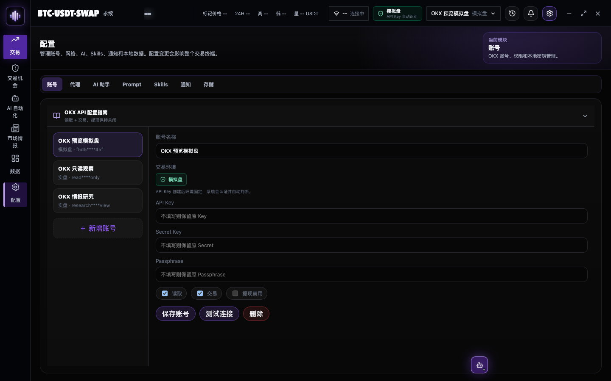
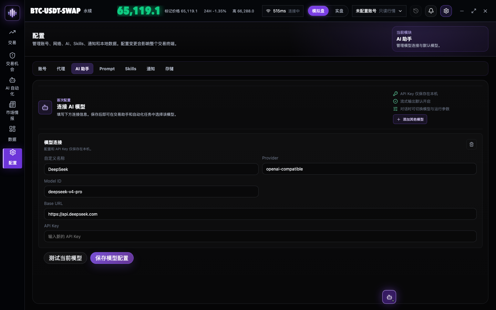

添加 OKX 账号
输入 API Key、Secret 和 Passphrase，系统会自动识别实盘或模拟盘；提现权限必须保持关闭。
凭据仅保存在本机自动识别环境禁止提现
保存并测试连接后自动进入下一步

输入 API Key、Secret 和 Passphrase，系统会自动识别实盘或模拟盘；提现权限必须保持关闭。

填写 Provider、Model ID、Base URL 和 API Key。保存后执行连接测试，只有测试通过才算完成。

账号和模型已自动带入。确认名称、模式与关注品种后保存；高级参数以后再设置。

进入当前 API Key 对应环境的交易面板，熟悉委托类型与预检；是否提交订单由你决定。